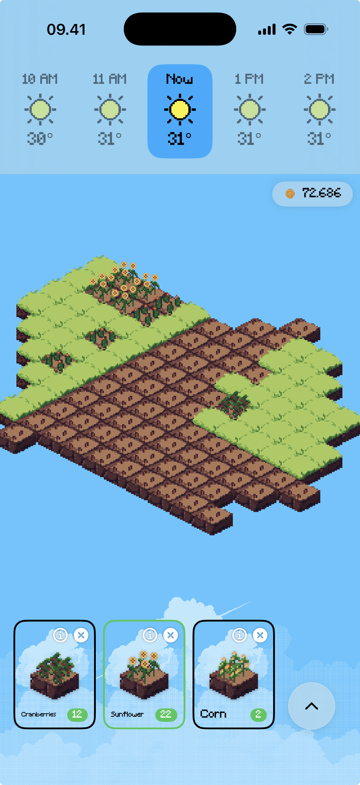
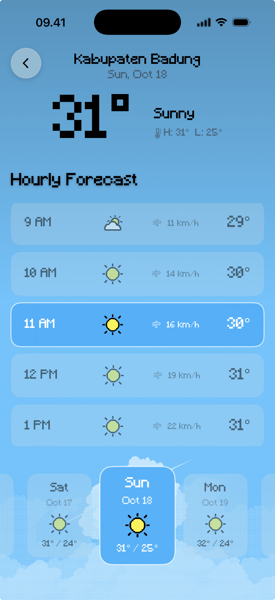

Nimbus Harvest
A cozy pixel-art farming game that uses your real local weather. When it rains outside, it rains on your farm, and that changes what’s worth planting.
- Role
- Game design, UI design and implementation, gameplay polish
- Date
- Built with
- SwiftUI, SwiftData, WeatherKit, WidgetKit
- Status
- On the App Store, including the EU

My part
I was the game designer. I also designed and implemented the UI and did the gameplay polish.
How it plays
The farm follows your local forecast. Sun, cloud, rain, snow, wind and heat all affect how crops grow, and each crop prefers different conditions. So what you plant depends on the actual weather. A sunny afternoon, an incoming storm or a cold spell each point to a different crop.
Making the farm hands-on
Early builds harvested crops automatically and gave planting almost no feedback. I removed auto-harvest so you pick the crops yourself, then added animation, sound effects and a coin sound. Planting and harvesting became easier to read and more satisfying to do.
After launch
The game is on the App Store, including in the EU, and has had one update since release.
Screenshots
